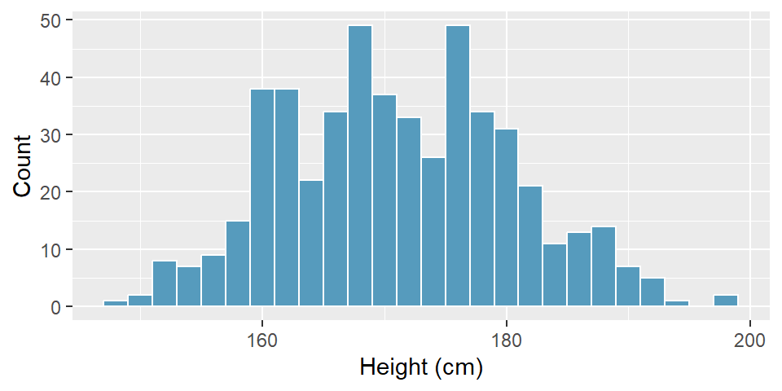
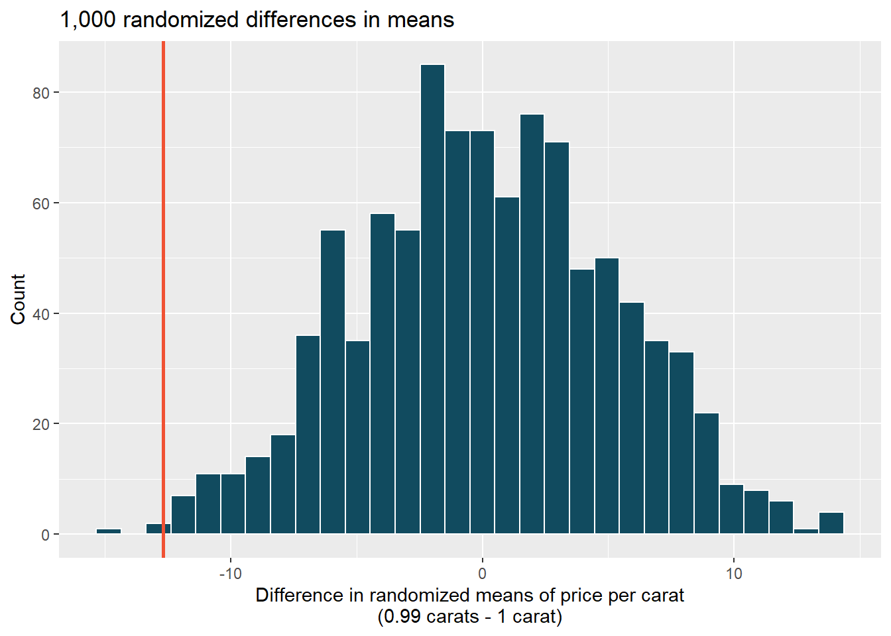
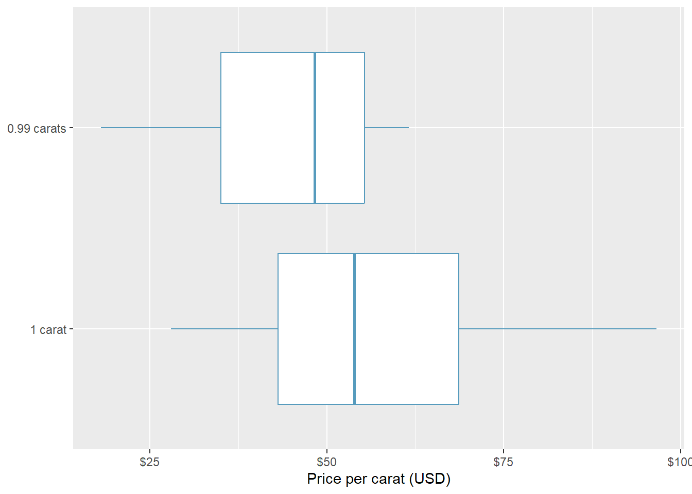
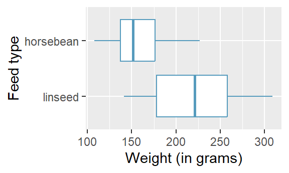
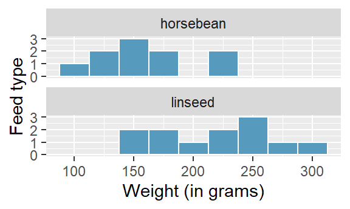

| n | Mean | SD | Min | Max |
|---|---|---|---|---|
| 25 | 7.73 | 0.77 | 6.17 | 9.78 |
Exercises 1
Probability and Statistics
Single mean
Statistics vs. parameters: one mean. Each of the following scenarios were set up to assess an average value. For each one, identify, in words: the statistic and the parameter.
A sample of 25 New Yorkers were asked how much sleep they get per night.
Researchers at two different universities in California collected information on undergraduates’ heights.
Heights of adults. Researchers studying anthropometry collected body measurements, as well as age, weight, height and gender, for 507 physically active adults. Summary statistics for the distribution of heights (measured in centimeters, cm), along with a histogram, are provided below.
Min 147.2 Q1 163.8 Median 170.3 Mean 171.1 Q3 177.8 Max 198.1 SD 9.4 IQR 14.0 
What are the point estimates for the average and median heights of active adults?
What are the point estimates for the standard deviation and IQR of heights of active adults?
Is a person who is 1m 80cm (180 cm) tall considered unusually tall? And is a person who is 1m 55cm (155cm) considered unusually short? Explain your reasoning.
The researchers take another random sample of physically active adults. Would you expect the mean and the standard deviation of this new sample to be the ones given above? Explain your reasoning.
The sample means obtained are point estimates for the mean height of all active individuals, if the sample of individuals is equivalent to a simple random sample. What measure do we use to quantify the variability of such an estimate? Compute this quantity using the data from the original sample under the condition that the data are a simple random sample.
Heights of adults vs. kindergartners. Heights of 507 physically active adults have a mean of 171 cm and a standard deviation of 9.4 cm.
Would you expect the standard deviation of the heights of a few hundred kindergartners to be higher or lower than 9.4 cm? Explain your reasoning.
Suppose many samples of size 100 adults is taken and, separately, many samples of size 100 kindergarteners are taken. For each of the many samples, the average height is computed. Which set of sample averages would have a larger standard error of the mean, the adult sample averages or the kindergartner sample averages?
Identify the critical \(t\). A random sample is selected from an approximately normal population with unknown standard deviation. Find the degrees of freedom and the critical \(t\)-value (t\(^\star\)) for the given sample size and confidence level.
\(n = 6\), CL = 90%
\(n = 21\), CL = 98%
\(n = 29\), CL = 95%
\(n = 12\), CL = 99%
Find the p-value, I. A random sample is selected from an approximately normal population with an unknown standard deviation. Find the p-value for the given sample size and test statistic. Also determine if the null hypothesis would be rejected at \(\alpha = 0.05\).
\(n = 11\), \(T = 1.91\)
\(n = 17\), \(T = -3.45\)
\(n = 7\), \(T = 0.83\)
\(n = 28\), \(T = 2.13\)
Sleep habits of New Yorkers. New York is known as “the city that never sleeps”. A random sample of 25 New Yorkers were asked how much sleep they get per night. Statistical summaries of these data are shown below. The point estimate suggests New Yorkers sleep less than 8 hours a night on average. Evaluate the claim that New York is the city that never sleeps keeping in mind that, despite this claim, the true average number of hours New Yorkers sleep could be less than 8 hours or more than 8 hours.
Write the hypotheses in symbols and in words.
Check conditions, then calculate the test statistic, \(T\), and the associated degrees of freedom.
Find and interpret the p-value in this context. Drawing a picture may be helpful.
What is the conclusion of the hypothesis test?
If you were to construct a 90% confidence interval that corresponded to this hypothesis test, would you expect 8 hours to be in the interval?
\(t^\star\) for the correct confidence level. As you’ve seen, the tails of a \(t-\)distribution are longer than the standard normal which results in \(t^{\star}_{df}\) being larger than \(z^{\star}\) for any given confidence level. When finding a CI for a population mean, explain how mistakenly using \(z^{\star}\) (instead of the correct \(t^{*}_{df}\)) would affect the confidence level.
Play the piano. Georgianna claims that in a small city renowned for its music school, the average child takes less than 5 years of piano lessons. We have a random sample of 20 children from the city, with a mean of 4.6 years of piano lessons and a standard deviation of 2.2 years.
Evaluate Georgianna’s claim (or that the opposite might be true) using a hypothesis test.
Construct a 95% confidence interval for the number of years students in this city take piano lessons, and interpret it in context of the data.
Do your results from the hypothesis test and the confidence interval agree? Explain your reasoning.
Two independent means
Experimental baker. A baker working on perfecting their bagel recipe is experimenting with active dry (AD) and instant (I) yeast. They bake a dozen bagels with each type of yeast and score each bagel on a scale of 1 to 10 on how well the bagels rise. They come up with the following set of hypotheses for evaluating whether there is a difference in the average rise of bagels baked with active dry and instant yeast. What is wrong with the hypotheses as stated?
\[H_0: \bar{x}_{AD} \leq \bar{x}_{I} \quad \quad H_A: \bar{x}_{AD} > \bar{x}_{I}\]
Diamonds, randomization test. The prices of diamonds go up as the carat weight increases, but the increase is not smooth. For example, the difference between the size of a 0.99 carat diamond and a 1 carat diamond is undetectable to the naked human eye, but the price of a 1 carat diamond tends to be much higher than the price of a 0.99 carat diamond. We have two random samples of diamonds: 23 0.99 carat diamonds and 23 1 carat diamonds. In order to be able to compare equivalent units, we first divide the price for each diamond by 100 times its weight in carats. That is, for a 0.99 carat diamond, we divide the price by 99 and for a 1 carat diamond, we divide it by 100. Then, we randomize the carat weight to the price values in order simulate the null distribution of differences in average prices of 0.99 carat and 1 carat diamonds. The null distribution (with 1,000 randomized differences) is shown below and depicts the distribution of differences in sample means (of price per carat) if there really was no difference in the population from which these diamonds came.

Using the randomization distribution, conduct a hypothesis test to evaluate if there is a difference between the prices per carat of diamonds that weigh 0.99 carats and diamonds that weigh 1 carat. Make sure to state your hypotheses clearly and interpret your results in context of the data.
Weight loss. You are reading an article in which the researchers have created a 95% confidence interval for the difference in average weight loss for two diets. They are 95% confident that the true difference in average weight loss over 6 months for the two diets is somewhere between (1 lb, 25 lbs). The authors claim that, “therefore diet A (\(\bar{x}_A\) = 20 lbs average loss) results in a much larger average weight loss as compared to diet B (\(\bar{x}_B\) = 7 lbs average loss).” Comment on the authors’ claim.
Diamonds, mathematical test. We have data on two random samples of diamonds: one with diamonds that weigh 0.99 carats and one with diamonds that weigh 1 carat. Each sample has 23 diamonds. Sample statistics for the price per carat of diamonds in each sample are provided below. Conduct a hypothesis test using a mathematical model to evaluate if there is a difference between the prices per carat of diamonds that weigh 0.99 carats and diamonds that weigh 1 carat Make sure to state your hypotheses clearly, check relevant conditions, and interpret your results in context of the data.
Mean SD n 0.99 carats $44.51 $13.32 23 1 carat $57.20 $18.19 23 
Diamonds, mathematical interval. We have data on two random samples of diamonds: one with diamonds that weigh 0.99 carats and one with diamonds that weigh 1 carat. Each sample has 23 diamonds. Sample statistics for the price per carat of diamonds in each sample are provided below. Assuming that the conditions for conducting inference using a mathematical model are satisfied, construct a 95% confidence interval for the true population difference in prices per carat of diamonds that weigh 0.99 carats and 1 carat.
Mean SD n 0.99 carats $44.51 $13.32 23 1 carat $57.20 $18.19 23 Difference of means. We collect two random samples from two different populations In each part below, consider the sample means \(\bar{x}_1\) and \(\bar{x}_2\) that we might observe from these two samples.
Mean Standard deviation Sample size Population 1 15 20 50 Population 2 20 10 30 What is the associated mean and standard deviation of \(\bar{x}_1\)?
What is the associated mean and standard deviation of \(\bar{x}_2\)?
Calculate and interpret the mean and standard deviation associated with the difference in sample means for the two groups, \(\bar{x}_2 - \bar{x}_1\).
How are the standard deviations from parts (a), (b), and (c) related?
Chicken diet: horsebean vs. linseed. Chicken farming is a multi-billion dollar industry, and any methods that increase the growth rate of young chicks can reduce consumer costs while increasing company profits, possibly by millions of dollars. An experiment was conducted to measure and compare the effectiveness of various feed supplements on the growth rate of chickens. Newly hatched chicks were randomly allocated into six groups, and each group was given a different feed supplement. In this exercise we consider chicks that were fed horsebean and linseed. Below are some summary statistics from this dataset along with box plots showing the distribution of weights by feed type.
Horsebean Linseed Mean 160.20 218.75 SD 38.63 52.24 n 10.00 12.00 

Describe the distributions of weights of chickens that were fed horsebean and linseed.
Do these data provide strong evidence that the average weights of chickens that were fed linseed and horsebean are different? Use a 5% discernibility level.
What type of error might we have committed? Explain.
Would your conclusion change if we used \(\alpha = 0.01\)?
Chicken diet: casein vs. soybean. Casein is a common weight gain supplement for humans. Does it have an effect on chickens? An experiment was conducted to measure and compare the effectiveness of various feed supplements on the growth rate of chickens. Newly hatched chicks were randomly allocated into six groups, and each group was given a different feed supplement. In this exercise we consider chicks that were fed casein and soybean. Assume that the conditions for conducting inference using mathematical models are met, and using the data provided below, test the hypothesis that the average weight of chickens that were fed casein is different than the average weight of chickens that were fed soybean. If your hypothesis test yields a statistically discernible result, discuss whether the higher average weight of chickens can be attributed to the casein diet.
Feed type Mean SD n casein 323.58 64.43 12 soybean 246.43 54.13 14 Gaming, distracted eating, and intake. A group of researchers who are interested in the possible effects of distracting stimuli during eating, such as an increase or decrease in the amount of food consumption, monitored food intake for a group of 44 patients who were randomized into two equal groups. The treatment group ate lunch while playing solitaire, and the control group ate lunch without any added distractions. Patients in the treatment group ate 52.1 grams of biscuits, with a standard deviation of 45.1 grams, and patients in the control group ate 27.1 grams of biscuits, with a standard deviation of 26.4 grams. Do these data provide convincing evidence that the average food intake (measured in amount of biscuits consumed) is different for the patients in the treatment group compared to the control group? Assume that conditions for conducting inference using mathematical models are satisfied.